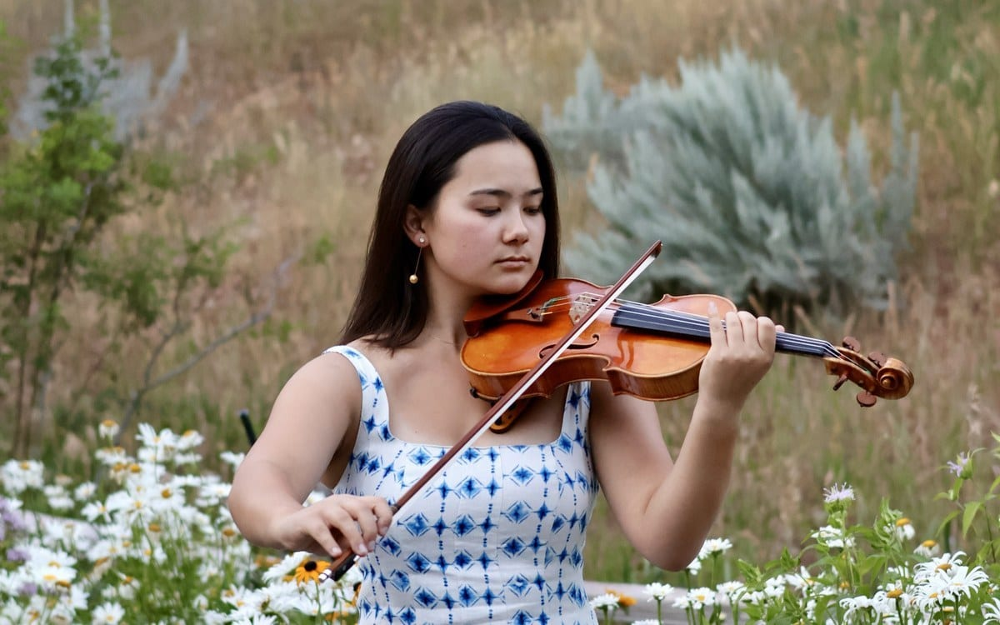
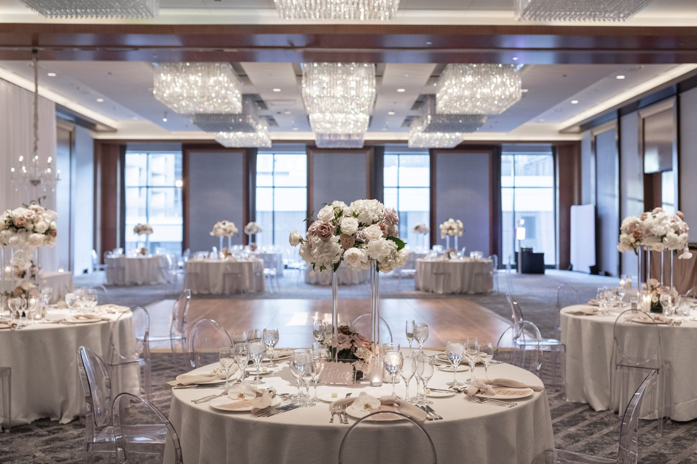

Classical strings
A string quartet or a solo violinist for weddings, galas and dinners.
The first notes of Canon in D begin, and everyone at the wedding stands up and turns toward the aisle. That’s what a lot of couples are picturing when they ask for strings. You can book a solo violinist, a duo, a trio or a full string quartet, and they can play anything from Bach to Coldplay arranged for strings.
Strings are just as lovely at a gala, a dinner, a party at home or a memorial service.
We can build the music around your event, from how many players you’d like to the pieces they play and what they wear. Here’s how booking through Signet works.
Trusted and booked by
Song list
What does a string quartet play?
Our song list runs from classical processionals and preludes to hymns, love songs, pop and the film themes couples often ask for. Everything on this list is arranged for strings, from one violin up to a full quartet.
Classical and traditional
- Air from Suite in D (Air on the G String) J.S. Bach
- Allegro from Eine Kleine Nachtmusik W.A. Mozart
- Arioso J.S. Bach
- Arrival of the Queen of Sheba G.F. Handel
- Ave Maria Franz Schubert
- Ave Verum Corpus W.A. Mozart
- Bridal Chorus (“Here Comes the Bride”) Richard Wagner
- Canon in D Johann Pachelbel
- Clair de Lune Claude Debussy
- Jesu, Joy of Man’s Desiring J.S. Bach
- Meditation from Thaïs Jules Massenet
- Ode to Joy Ludwig van Beethoven
- Pavane Gabriel Fauré
- Rondeau Jean-Joseph Mouret
- Salut d’Amour Edward Elgar
- Sheep May Safely Graze J.S. Bach
- Spring Antonio Vivaldi
- The Swan Camille Saint-Saëns
- Trumpet Tune Jeremiah Clarke
- Trumpet Voluntary Jeremiah Clarke
- Vocalise Sergei Rachmaninoff
- Wedding March Felix Mendelssohn
- Winter (Largo) Antonio Vivaldi
- Come Again: Sweet Love Doth Now Invite John Dowland
- Concerto in G (“Alla Rustica”) Antonio Vivaldi
- Hornpipe from Water Music G.F. Handel
- La Réjouissance G.F. Handel
- Prelude from Te Deum Marc-Antoine Charpentier
- Por Una Cabeza Carlos Gardel
Hymns and worship songs
- Amazing Grace
- Be Thou My Vision
- Come Thou Fount of Every Blessing
- Great Is Thy Faithfulness
- How Great Thou Art
- Holy, Holy, Holy
- It Is Well with My Soul
- Jesus Paid It All
- A Mighty Fortress Is Our God
- Praise to the Lord, the Almighty
- Rock of Ages
- The Old Rugged Cross
- What a Friend We Have in Jesus
- ’Tis So Sweet to Trust in Jesus
- Goodness of God
- 10,000 Reasons (Bless the Lord)
- In Christ Alone
- Oceans (Where Feet May Fail)
Love songs
- All I Ask of You Andrew Lloyd Webber
- All of Me John Legend
- And I Love Her The Beatles
- At Last Etta James
- Can’t Help Falling in Love Elvis Presley
- Everything Michael Bublé
- Faithfully Journey
- Forever and for Always Shania Twain
- First Day of My Life Bright Eyes
- Here, There, and Everywhere The Beatles
- I Choose You Sara Bareilles
- I’m Yours Jason Mraz
- In My Life The Beatles
- Just the Way You Are Bruno Mars
- Lego House Ed Sheeran
- Love Me Tender Elvis Presley
- Love Song Sara Bareilles
- Love Story Taylor Swift
- Lovesong The Cure
- The Luckiest Ben Folds
- Make You Feel My Love Bob Dylan
- Marry Me Train
- Moon River Henry Mancini
- One Hand, One Heart Leonard Bernstein
- A Thousand Years Christina Perri
- Thinking Out Loud Ed Sheeran
- ’Til There Was You The Beatles
- Turning Page Sleeping at Last
- We Belong Together Mariah Carey
- What Makes You Beautiful One Direction
- Wonderful Tonight Eric Clapton
- Yellow Coldplay
- Yesterday The Beatles
- You’re Beautiful James Blunt
Pop, rock and indie
- All You Need Is Love The Beatles
- Baba O’Riley The Who
- Beautiful Day U2
- Best Day of My Life American Authors
- Bittersweet Symphony The Verve
- Brave Sara Bareilles
- Brown Eyed Girl Van Morrison
- Call Me Maybe Carly Rae Jepsen
- Clocks Coldplay
- Dancing on My Own Robyn
- Digital Love Daft Punk
- Don’t Stop Believin’ Journey
- Don’t Worry Baby The Beach Boys
- Eleanor Rigby The Beatles
- Falling Slowly Glen Hansard and Markéta Irglová
- Firework Katy Perry
- Good Vibrations The Beach Boys
- Here Comes the Sun The Beatles
- Hey Soul Sister Train
- Hey There Delilah Plain White T’s
- Hold On, We’re Going Home Drake
- Home Edward Sharpe and the Magnetic Zeros
- I Gotta Feeling The Black Eyed Peas
- Mr. Brightside The Killers
- Paradise Coldplay
- Please, Please, Please Let Me Get What I Want The Smiths
- Rolling in the Deep Adele
- Shake It Off Taylor Swift
- Seven Nation Army The White Stripes
- Smells Like Teen Spirit Nirvana
- Smooth Criminal Michael Jackson
- Somewhere Only We Know Keane
- Starlight Muse
- Such Great Heights The Postal Service
- Sugar, We’re Goin’ Down Fall Out Boy
- Teenage Dream Katy Perry
- Today The Smashing Pumpkins
- Underneath It All No Doubt
- Viva La Vida Coldplay
- We Found Love Calvin Harris and Rihanna
- With a Little Help from My Friends The Beatles
- With or Without You U2
- Without You David Guetta and Usher
- Yeah! Usher
- You’re All I Need to Get By Marvin Gaye
Soul, jazz and Motown
- For Once in My Life Stevie Wonder
- It Don’t Mean a Thing (If It Ain’t Got That Swing) Duke Ellington
- It Was a Very Good Year Frank Sinatra
- The Lady Is a Tramp Frank Sinatra
- Like a Virgin Madonna
- Moondance Van Morrison
- No One Alicia Keys
- Rocket Love Stevie Wonder
- Signed, Sealed, Delivered (I’m Yours) Stevie Wonder
- Smash Into You Beyoncé
- Stand by Me Ben E. King
- Stepping Out with My Baby Tony Bennett
- Strangers in the Night Frank Sinatra
Film themes
- Across the Stars John Williams
- Concerning Hobbits Howard Shore
- Linus and Lucy Vince Guaraldi
- Married Life (from Up) Michael Giacchino
- Storybook Love Mark Knopfler
- The Throne Room (Star Wars) John Williams
Song list
A sample of songs
Want to see every song? Take a look at our string quartet page. If you want a song that isn't on the list, let us know and we can usually have it arranged for your group.

- Canon in DPachelbel
- A Thousand YearsChristina Perri
- Air on the G StringBach
- Can't Help Falling in LoveElvis Presley
- Clair de LuneDebussy
- Viva La VidaColdplay
- SpringVivaldi
- Here Comes the SunThe Beatles
- Jesu, Joy of Man's DesiringBach
- Bitter Sweet SymphonyThe Verve
- Ave MariaSchubert
- Married LifeMichael Giacchino
- The SwanSaint-Saëns
- Moon RiverHenry Mancini
- Eine Kleine NachtmusikMozart
- Wedding MarchMendelssohn
- Por Una CabezaCarlos Gardel
- Amazing GraceTraditional
Sizes
From a solo violinist to a full string quartet
- Solo violin
- A solo violinist can play a whole ceremony, an hour of music at a dinner, or a single song at a proposal.
- Duo
- A duo is a violin and a cello. The cello plays the low notes under the melody, so Canon in D sounds the way people remember it, and a processional feels fuller in a big space. It’s the size most often booked for the ceremony and the cocktail hour together.
- Trio
- A trio is two violins and cello, or violin, viola and cello. A third player adds harmony, so pop songs and film themes sound fuller, and it’s an excellent choice for a cocktail hour or a long dinner where your guests want to talk.
- String quartet
- A string quartet is two violins, viola and cello, the group that so much classical music was written for. This is the size to choose for a church or a ballroom, the first hour of a gala, or a reception where you’d like the full sound during dinner.
Prefer a guitar at your ceremony? Take a look at our solo guitarist or our Spanish guitarist. Want a change of pace after the ceremony? A jazz duo can play the cocktail hour and a DJ can get people dancing, all on the same contract.
Occasions
Perfect booking for
- The wedding ceremony
- Strings can play every part of a ceremony, from the prelude to the recessional. The musicians watch the aisle, so the processional can last as long as the walk does, and in a big church or a mountain ballroom, a quartet will carry better than a single violin.
- The cocktail hour
- The same musicians can stay on for the cocktail hour and play songs by Coldplay, the Beatles and Taylor Swift, at a volume your guests can easily talk over.
- Galas and awards nights
- A string quartet is a great way to welcome guests to a black-tie gala. We can also book the rest of your gala’s music, from dinner through the dancing.
- Client dinners
- A duo or a trio works well at a client dinner, since you get live music and your conversations stay front and center.
- Anniversaries and milestone birthdays
- A violinist or a trio is a lovely touch for a dinner at home, a fiftieth anniversary at a club or an eightieth birthday, and we can play the song from your own wedding if you’d like.
- Proposals and surprises
- Looking for just one song? We can send a violinist to play A Thousand Years or a film theme that means something to you.
- Funerals and memorial services
- We can play Ave Maria, Amazing Grace and the hymns your family chooses on one violin or on violin and cello, in a chapel, at a graveside or at a celebration of life.
Video Clips
Watch a string quartet and a solo violinist play
Here’s a string quartet playing the first two movements of a Beethoven quartet, along with a violinist playing Bach, Paganini and Sibelius.



Venues
We’d pick Classical Strings for live music at these venues.

Downtown Denver
Hyatt Centric Downtown Denver
A rooftop bar and patio, a cozy lobby and the Colorado Ballroom.
Played hereTejas Singh
Live music at Hyatt Centric Downtown Denver
Colorado Springs
Cheyenne Mountain Resort
The Centennial, Colorado and Remingtons ballrooms and the beach on the resort’s private lake.
Acts we'd pickClassical Strings · Tejas Singh · Little Moses Jones
Live music at Cheyenne Mountain Resort
Downtown Denver
Four Seasons Hotel Denver
The Grand Ballroom, the Cottonwood Ballroom and the third-floor Pool Terrace.
Acts we'd pickLittle Moses Jones · Tejas Singh · Dirty Flamenco
Live music at Four Seasons Hotel Denver
Colorado Springs, above Garden of the Gods
Garden of the Gods Resort and Club
The Three Graces Ballroom and Terrace, the View at Kissing Camels, the Garden Room, the Hill Room and the Reflection Pool.
Acts we'd pickClassical Strings · Tejas Singh · Meghan Clarisse
Live music at Garden of the Gods Resort
Aurora, by Denver International Airport
Gaylord Rockies Resort & Convention Center
Four ballrooms, the Mountain View Pavilion and its lawns, the Grand Lodge and the Front Range Lawn.
Acts we'd pickTejas Singh · Little Moses Jones · Quadrasonic
Live music at Gaylord Rockies
Downtown Denver
Grand Hyatt Denver
The Pinnacle Club on the 38th floor, the Colorado Ballroom and the Aspen Ballroom.
Acts we'd pickJazz Duo · Little Moses Jones · Quadrasonic
Live music at Grand Hyatt Denver
Downtown Denver
Hilton Denver City Center
The Colorado, Denver and Penrose ballrooms and an outdoor plaza.
Acts we'd pickLittle Moses Jones · Soul and R&B Band · Jazz Duo
Live music at Hilton Denver City Center
Downtown Boulder
Hotel Boulderado
The Boulderado Ballroom, the Mezzanine and the Grand Staircase, Columbine-Balsam and the Corner Bar.
Acts we'd pickClassical Strings · Tejas Singh · Jazz Duo
Live music at Hotel Boulderado
Downtown Denver, at the Colorado Convention Center
Hyatt Regency Denver at Colorado Convention Center
The Centennial Ballroom, the Capitol Ballroom, the Denver City Terrace and the Silver Room.
Acts we'd pickClassical Strings · Little Moses Jones · Soul and R&B Band
Live music at Hyatt Regency Denver
Broomfield, between Denver and Boulder
Omni Interlocken Hotel
The Interlocken and Centennial ballrooms, Ponderosa, the Outdoor Pavilion and the ceremony lawn.
Acts we'd pickClassical Strings · Dirty Flamenco · Little Moses Jones
Live music at Omni Interlocken
Downtown Boulder
St Julien Hotel & Spa
The Xanadu Ballroom, the lawn, the Redgarden terraces and Jill’s, with views of the Flatirons.
Acts we'd pickClassical Strings · Tejas Singh · René Moffatt
Live music at St Julien Hotel & Spa
Colorado Springs, at the foot of Cheyenne Mountain
The Broadmoor
The Main Ballroom, the Lake Terrace and Lakeside Terrace, Broadmoor Hall, the International Center and Cheyenne Lodge.
Acts we'd pickClassical Strings · Jazz Duo · Dirty Flamenco
Live music at the Broadmoor
Downtown Denver
The Brown Palace Hotel and Spa
The Grand Ballroom, the Onyx Room, Central City, the Brown Palace Club and the atrium lobby.
Acts we'd pickTejas Singh · Jazz Duo · Dirty Flamenco
Live music at the Brown Palace
Union Station, Lower Downtown Denver
The Crawford Hotel
The Cooper Lounge, the Great Hall, the Webb Gallery and the Terminal Bar on the Plaza.
Acts we'd pickJazz Duo · Solo Guitarist · Tejas Singh
Live music at the Crawford Hotel
Westminster, between Denver and Boulder
The Westin Westminster
The Westminster, Legacy and Standley ballrooms, the Waterfall Gardens, the Lake House and the Sunset Rooftop Deck.
Acts we'd pickClassical Strings · Little Moses Jones · Quadrasonic
Live music at the Westin Westminster
String quartet questions
Have a question about substitutions or other booking details? You’ll find the answers on our full list of questions. Want to know more about the four instruments, or how a trio or duo compares? Check out our guide to the string quartet.
What does a string quartet cost for a wedding in Denver?
Can a string quartet play outdoors?
How loud is a string quartet?
Can you play a song that isn't on the list?
Who will the musicians be?
We quote each date one-by-one.
Looking for a string quartet or a violinist?
Send us your date and venue, and we’ll get back to you about availability and costs.
Want photos or video of your event? Add them to your booking.